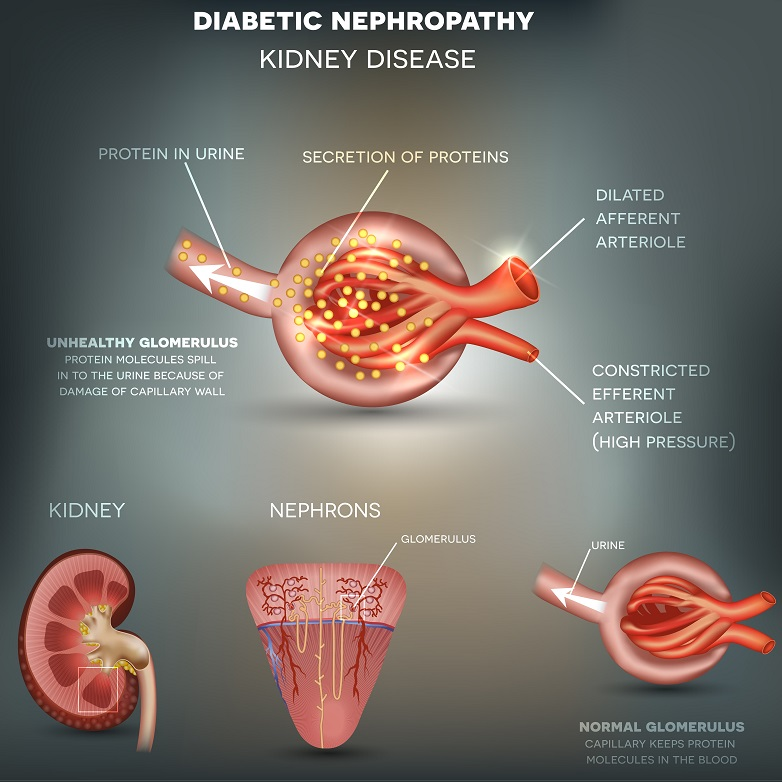

Around 10% of the adult population has some form of kidney disease. 90% of the people who are diagnosed with severe kidney disease die because they are unable to afford the treatment. Also, patients with kidney disease are at a higher risk of cardiovascular disease. These statistics are alarming but true. The only way out is to be aware of the types of kidney disease and the best kidney hospitals in India so that you can seek immediate help if the need arises
The renal system is a complicated organ system that mainly consists of 2 fist-sized kidneys. They are present on either side of the spine.The kidneys have a network of nephrons that have multiple responsibilities such as:
There are many types of kidney disease that attack these nephrons and disrupt the normal functioning of the kidneys. We shall discuss a few of the common ones so that you stay on guard and take measures to avoid them.
CKD is prevalent across India. When kidneys lose their ability to filter the blood and remove all the waste products, it leads to CKC. This can be very harmful because the waste builds up and leads to multiple complications.
this can get worse and lead to kidney failure. Deaths in pakistan due to kidney failure have seen a sharp rise of 38% from 2001-03 to 2010-13.Deaths in pakistan due to kidney failure have seen a sharp rise of 38% from 2001-03 to 2010-13. While damage to the kidneys cannot be reversed, when detected early, doctors can slow it down so that it does not worsen as fast. A kidney-friendly diet, exercise, and medication are advised.
People with diabetes (Diabetic Kidney Disease), heart disease, and blood pressure are at a higher risk of getting CKD.
The kidneys have small filters named glomeruli, which clean the blood. Glomerulonephritis occurs when these filters are damaged and are unable to perform their duties anymore.
Also known as Glomerular Disease, it usually occurs when the immune system gets overactive due to an infection or other causes. There are 2 types of Glomerulonephritis:
The immune system makes multiple proteins. When these proteins settle in the kidneys, it leads to IgA Nephropathy. It damages the glomeruli and ultimately leads to Chronic Kidney Disease. IgA Nephropathy often goes undetected until it gets severe and it has no cure. Medication can only slow the spread of the damage down.
There are many other rare kidney diseases that hurt the kidneys and lead to kidney failure. A healthy diet and an active lifestyle can go a long way in preventing these diseases.
Chronic Kidney Disease is the most common type of kidney disease. There’s no cure for it and it will lead to kidney failure and death sooner or later. This is why speaking to top kidney specialists in India regularly and getting health check-ups done is crucial. When detected early, doctors can take measures to minimize the damage
At AINU, we have some of the best kidney specialists in vizag who are experts in all forms of kidney disease. If you have any questions or would like to book a consultation, please get in touch with us.
Find and Book Top Nephrologists In Karachi Instantly